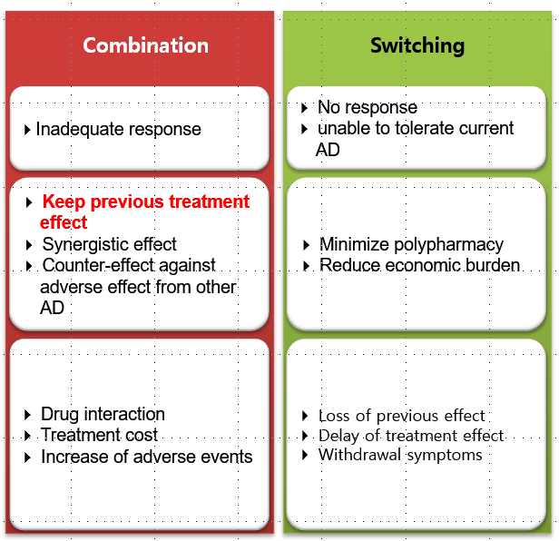

62 치료 중 부딪히게되는 문제들
62.1 치료 결과가 만족스럽지 못한 환자
충분히 항정신병 약물을 투여해도 원하는 치료 효과를 얻지 못한다면 낭패가 아닐 수 없다. 치료에 전혀 반응하지 않는 경우도 있고, 분명히 반응이 있긴 하지만 만족스러운 수준에 도달하지 못한 경우도 있다.[1] 전자의 경우는 효과가 없는 약물을 걸러낸다는 면에서 나름대로 의미가 있지만, 효과가 없다고 판단하는 것이 말처럼 쉽지가 않다. 치료저항성(treatment resistance)이란 보통 적절한 치료에도 불구하고 상당히 심한 증상이 지속되는 것을 이야기하므로, 반응이 있되 깨끗하게 낫지 않는 환자들을 치료저항성으로 분류하기는 애매하다.[2]
게다가 어중간한 치료 반응이 약물에 의한 것인지도 분명하지 않다. 많은 위약 대조 임상 시험에서 드러나듯이 위약 효과는 상당히 큰 편이다.[3] 치료진의 관심과 지지를 받는 것 자체가 치료적 효과를 보이며, 더군다나 입원 치료를 받을 때는 안정된 환경, 자극 차단, 행동 통제 등 환경 치료가 치료에 도움을 준다. 또한 치료 초기에는 병용 약물의 효과가 더 크게 나타나기도 한다. 따라서 효과없는 약물을, 효과가 없다고 선언하는 것이 상당히 힘들다. 비특이적 치료 효과를 항정신병 약물의 효과로 오인하여, 만족할만한 반응이 얻어질 때까지 마냥 기다린다면 그만큼 치료 기회를 놓치는 셈이다.
62.1.1 초기 반응의 중요성
따라서 한시라도 빨리 효과적인 약물과 그렇지 못한 약물을 구분해낼 필요가 있다. 고전적으로는 효과를 판정하기 위해서 일단 유효 용량의 항정신병 약물을 투여한 후 충분한 기간(4~8주 정도)동안 기다리라고 권고하는데, 변화된 의료현실에서 이 정도 시간을 낭비할 여유가 없다.
현대의 연구자들은 좀더 빨리 반응 여부를 판정할 수 있다고 자신있게 말한다. Agid 등[4]의 메타 분석에 의하면, 약물에 의한 BRPS/PANSS 감소 비율은 첫 주에 13.8%, 둘째주에 8.1%, 셋째 주에 4.2%로, 초기 2주 내에 20% 이상 감소하였다. 보통 BRPS/PANSS 총점이 20% 이상 감소하는 것을 반응(response)으로 정의하기 때문에, 첫 2주 내에 반응 여부가 결판난다는 뜻이다. 유사한 맥락에서 Ascher-Svanum 등[5]은 1년 이상 경과를 관찰한 임상 시험 자료를 재분석 한 후, 첫 2주 동안의 반응 여부가 8주 째 반응 여부를 72%의 정확도로 예측할 수 있다고 하였다. 첫 2주 동안에 눈에 띠는 반응을 보이지 못했다면, 이후에도 관해율이 낮고 기능 회복도 하지 못했다. Kinon 등[6] 역시 올란자핀을 이용한 임상 연구를 통하여, 초기 2주 동안의 반응 여부가 3개월 후의 반응 여부(PANSS 40% 이상 감소)를 80% 이상의 정확도로 예측해주었다고 보고하였다. Samara 등[7]은 이러한 논쟁에 결론을 짓기 위해 30개가 넘는 임상 시험 자료를 종합하여 만 명 가까운 환자에 대해 메타 분석을 하였는데, 역시 초기 2주 내에 반응 여부를 가지고 연구 종료 시점에서의 관해 여부(PANSS 50% 이상 감소)를 예측할 수 있으며, 그 정확도는 특이도가 86%, 양성예측도는 무려 90%에 달하였다.
물론 2주 내에 효과 판정을 할 수 있다는 주장은, 치료 초기부터 유효 용량이 투여되었을 때만 유효하다. 부작용이나 주관적 불쾌감 등의 이유때문에 신속히 유효 용량까지 올리지 못했다면, 효과 판정을 하기 위해 좀더 시간이 필요하다. 따라서 약물을 투여하기 시작한 시점이 아니라, 유효 용량에 도달한 시점부터 2주 이내로 판정 기한을 바꾸는 것이 합리적이다. 예를 들어 용량 적정이 빠른 리스페리돈은 2주 이내의 반응으로 추후 반응을 예측하는 것이 가능했지만, 좀더 적정에 시간이 걸리는 올란자핀은 예측 정확도가 매우 떨어졌다.[8] 좌불안석 위험때문에 용량 적정이 늦는 아리피프라졸 역시, 추후 반응을 가장 정확히 예측하는 시점은 초기 3주까지의 반응 여부였다. 또한 여건이 허락한다면 효과 판정을 하기 전에 약물농도를 점검해보도록 한다.[9]
62.1.2 기다려보는 전략
앞서 소개한 진보적인 학자들의 주장이 맞다면 초기 2주 내에 반응을 보이지 않았다면 마냥 기다리는 것은 의미가 없다.[7] 하지만 반대로 초기 2주 내에 어느 정도 반응을 보였다면, 용량을 더 올리지 않은 채 관해에 이르기까지 기다려 볼 수 있다. 그러나 앞서의 연구 결과는 초기에 반응을 보이지 않으면 나중에도 결과가 안 좋았다는 뜻이지, 초기에 부분적으로라도 반응을 했다면 저절로 관해에 이르게 된다는 뜻은 아니다. 즉 적지 않은 환자들은 초기에 증상이 좋아지는 듯 하다가, 더 이상 좋아지지 않고 마냥 그 상태를 유지한다. 의사는 약물을 포기하기도 어렵고, 계속 사용하기도 껄끄러운 난처한 입장에 처하게 된다.[10]
초기 2주가 지난 후, 언제 재평가가 이뤄져야 하는 지에 대해선 정해진 지침이 없다. 그러나 대부분의 임상 시험은 6~8주 지속되기 때문에, 일단 2주 시점에서 한번 평가한 후, 추가로 4~6주 정도 더 지켜본 다음에 다시 한번 평가를 한다고 짐작할 수 있다. 비록 Andreasen 등[11]이 제시한 기준에 의하면, 관해(remission)란 6개월 이상 지켜보아야 내릴 수 있는 판정이지만, 보통 6~8주 시점에서 BRPS/PANSS가 기저치의 50% 이상 감소하면 관해에 이르렀다고 판정한다.[12] 만약 이 기준에 도달하지 못했다면, 아래와 같이 새로운 전략을 세워야 한다.
62.1.3 증량
현실적으로 많은 의사들은 약물을 바꾸기 전에 일단 용량을 최대한 올려본다.[13] 예를 들어 미국 정신과 의사의 절반 이상은 올란자핀을 허가 용량인 20mg 보다 더 높게 사용한다.[14] 치료저항성 환자에게 올란자핀을 25~45mg/day 사용하면, 통상 용량을 사용했을 때보다 우수한 결과를 나타내며, 심지어 클로자핀에 뒤지지 않는 효과를 보이기도 하였다.[15,16] Batail 등[17]의 용량-농도 연구에 의하면, 올란자핀의 일일 용량을 100mg까지 올려도 용량-농도 곡선은 정비례 관계를 보였다. 즉 용량을 높이면 그만큼 혈중 농도를 올릴 수 있다는 뜻이다.
그러나 엄격한 임상 연구에서 증량의 효과는 변변치 않았다. Agid 등[4]은 초발 환자를 대상으로, 리스페리돈, 올란자핀을 통상 용량으로 투여하는 1차 시도에서 반응이 미진했던 환자를 골라, 일부는 용량을 그대로 유지하고 나머지는 용량을 올려 두 군을 비교하였다. 후자는 올란자핀 30mg, 리스페리돈 10mg까지 사용하였는데, 이렇게 해서 추가로 반응을 보인 환자의 비율은 기껏해야 15% 정도에 지나지 않았다. Lindenmayer 등[18]이 퀘티아핀을 1,200mg 까지 증량해보았던 연구에서도, 600mg의 통상 용량을 유지했던 군과 별 차이가 없었다. 유사한 연구들에서도 고용량 투여가 기대만큼 도움이 되지 않는다는 것이 확인되었다.[19,20] Dold 등[21]은 유사한 연구들을 메타 분석하여, 유효 용량에 반응을 보이지 않았다면, 용량을 훨씬 올리더라도 별 이득을 기대할 수 없다는 결론을 내렸다. 올란자핀의 고용량 치료는 거의 유일한 예외였다. 고용량이 효과가 없는 이유는, 통상 용량에서도 이미 D2 수용체가 충분히 차단되며, 지나친 D2 차단은 오히려 D2의 초과민화만 일으키기 때문일 것이다.[22]
한편 위의 연구들은 6~8주 충분히 기다려본 다음에 용량을 올려본 경우임을 기억해야 한다. 초기 2주 동안에 반응이 여의치 않아서 전략을 수정해야 한다면, 일단 용량을 더 올려본다 치료 초기의 무반응은 약동학적 개인차에 의한 것일 가능성이 있기 때문이다. PET 촬영을 통해 직접 D2 수용체 차단 정도를 확인해보지 않는 이상, 현재 용량이 개개 환자에게 충분한 용량인지는 확신할 수 없다. 이런 경우 용량을 올려보는 것은 적정 용량을 탐색해본다는 의미에서 시도해볼만 하다. Loebel 등[23]은 2주 간의 lurasidone 80mg 치료로 반응을 보이지 않았던 환자들을 골라, 한 군은 80mg를 유지하고, 다른 군은 160mg으로 증량하였다. 6주 후에 PANSS를 비교해보았더니 160mg으로 증량한 군이 유의하게 감소의 폭이 컸다.
62.1.4 병합 요법 및 약물 교체
대부분의 치료 가이드라인에서는 용량을 올린 후에도 여전히 반응이 좋지 않은 경우 1) 병합 요법을 시행하거나 2) 약물을 바꿔보라고 권한다.[24] 병합 요법과 약물 교체 중 어느 쪽으로 결정할 지는 부분 반응의 정도에 따라 달라진다. 만약 일차 약물에 부분적이지만 상당히 의미있는 반응을 하였고, 이를 포기하기 싫다면 병합요법을 시행할 것이다. 반면 일차 약물이 전혀 기대에 미치지 못하거나, 심한 부작용때문에 더 이상 사용하기 어렵다면 교체를 고려해야만 할 것이다. 병합 요법은 약물의 상승 효과를 기대할 수 있고, 상대 약물의 약점을 보완할 수 있다는 장점이 있으나, 예기치 않은 약물 상호작용, 부작용 및 비용의 증가를 수반한다. 이에 비해 약물 교체는 다약제 병용을 줄이고, 약물 상호작용의 위험이 적으며, 경제적 부담을 줄인다. 그러나 이전 약물로 얻은 효과를 포기할 수 밖에 없고, 교체로 인한 약물 적정이 복잡하여 그만큼 치료에 시간이 걸린다는 단점이 있다. 이전 장(8-3-8)에서 논의했듯이 교체를 시도할 때는 다른 클래스에 속하는 약물을 선택하며, 환자가 견디기 어려워했던 부작용이 적은 약물을 선택한다.

문제는 첫번째 약물에 반응이 없었던 이유가, 환자가 애초에 치료저항성 환자였기 때문일수도 있다는 것이다.1 이 경우 아무리 약물을 교체하거나 병합 요법을 해도 그다지 반응률이 올라가지 않을 것이다. 치료 가이드라인에서는 적어도 두 가지 약물이 실패한 후에야 세번째 순위로 클로자핀을 고려한다. 그러나 일부 진보적인 학자들은 클로자핀을 적어도 두번째 순위로 앞당겨야 한다고 주장한다.[27] 초발 환자에게 일찌감치 클로자핀을 고려하는 것은 쉽지 않은 선택이지만, 동시에 이들을 신속히 치료하지 못하면 평생에 걸쳐 기능 수준 및 삶의 질이 떨어지며, 장기적 예후 또한 좋다. Agid 등[28]이 244명의 초발 환자를 대상으로 수행한 연구에 따르면, 첫번째 약물에 반응한 비율이 74.5% 였던 반면, 나머지 비반응군 중 두번째 약물에 반응한 비율은 16.6%에 지나지 않았다. 그러나 두번째 약물에도 반응하지 않던 군에게 클로자핀을 사용했더니 다시 반응률이 75.0%까지 상승하였다. 이러한 결과는 다른 비정형 약물을 사용했던 두번째 단계가 시간 낭비에 지나지 않았음을 시사한다.
1 최근에는 치료저항성 환자가 애초부터 정해져 있다고 생각하는 학자가 많아졌다.[26]
그러나 여전히 초발 환자에게 클로자핀을 사용하는 것은 여의치 않다.2 무과립구혈증을 무릅쓰다고 할지라도, 체중 증가를 비롯한 대사 증후군, 침흘림이나 야간뇨 등 환자를 수치스럽게 만드는 부작용은 초발 환자들에게 강한 거부감을 불러일으킨다. 더불어 한번 클로자핀을 사용하면 더 이상 다른 약에 반응하지 않게 된다는 우려도 있다. 물론 정말 그렇다는 증거는 없지만, 애초에 치료 저항성을 보인 환자들이니 현실적으로 그렇게 되지 말라는 보장도 없다.
2 영국에서 클로자핀을 사용하게 된 초발 환자 431명을 대상으로 집계한 바에 따르면, 클로자핀을 사용하기 전까지 시도해본 항정신병 약물은 평균 3가지였으며, 이 과정에 걸린 기간은 평균 19.5개월이었다.[29]
62.2 기타 약물의 사용
62.2.1 대증적 치료
조현병을 치료한다고 해서 항정신병 약물만 쓰는 것은 아니다.[30] 다른 향정신성 의약품을 사용하는 병용요법(adjunctive treatment)은, 1) 부수 증상을 조절하기 위한 경우와, 2) 반응 부족을 극복하기 위한 경우로 나눌 수 있다. 조현병만 잘 해결하면 부수 증상이 저절로 해결된다는 원칙은 현실에는 잘 들어맞지 않는다. 핵심이 되는 증상과 속발하는 증상, 그리고 증상에 대응하는 정상적 심리과정에서 만들어지는 증상 등 갖가지 병적 과정이 뭉쳐 복합체가 만들어진다.[31] 게다가 의사가 중요시하는 병의 징후와 환자가 느끼는 고통의 근원이 다를 수 있다. 예를 들어 환청의 경우, 의사는 환청이라는 정신병리에 주목하겠지만, 환자는 위협적인 목소리에서 비롯된 불안에 더 고통을 받을 것이다. 치료 동맹이 잘 유지되려면, 무엇보다 환자 자신이 경험하는 고통이 줄어들어야 한다. 예로 든 상황에서 벤조디아제핀을 충분히 사용하는 것은 환청을 줄이는데는 큰 의미가 없을 지 모르지만, 불안을 감소시키는데는 중요한 의미를 갖는다.
이러한 현실은 정신의학의 질병분류학(nosology)에 대해 근본적인 재검토를 요구한다.[32] 일부 의사들은 정신의학은 진단의 중요성이 매우 떨어지기 때문에, 결국 대증 요법에 의지할 수 밖에 없다고 여긴다.3 조현병 환자가 보이는 우울 증상이나 주요 우울증 환자의 우울 증상은 모두 동일하게 치료할 수 밖에 없다는 입장이다. 이들은 항정신병 약물은 양성 증상을 해결하는데는 효과적이지만. 환자들이 보이는 다양한 부수 증상들에 대해서는 별 효과가 없다고 여긴다. 이렇게까지 극단적인 생각을 갖고 있지 않는 의사라도 불면에는 수면제, 감정기복에는 기분조절제, 우울 증상에는 항우울제를 추가로 사용하는 것이 보통이다.
3 이러한 논쟁은 결국 의학의 역사에서 히포크라테스 전통과 갈렌 전통의 엇갈림이기도 하다.[33]
한편 환자가 치료 효과를 신속히 느끼도록 하기 위해 전략적으로 병용 약물을 사용할 수 있다. 환자가 항정신병 약물의 효과를 느끼기 시작하는데 약 2~4주 가량의 시간이 걸릴 수 있다. 반면 벤조디아제핀이나 수면제 등은 치료 반응이 즉각적이기 때문에, 환자는 무언가 혜택을 받고 있음을 실감할 수 있다.
그러나 약물이 많아지면 복용이 불편해질 뿐더러, 개개 약물의 치료 효과를 판정하기 어렵고, 불필요한 부작용을 불러일으킬 수 있다. 치료 초기부터 벤조디아제핀과 수면제에 의존하기 시작하면, 급성 증상이 가라앉은 이후에도 내성과 남용 문제가 뒤따른다. 따라서 일차 치료 약제를 제외한 병용 약물들은 수시로 재평가하여 필요가 없다고 판단되면 줄이거나 끊어야만 한다. 또한 항파킨슨제의 경우에도 예방 차원의 투여는 바람직하지 않으며, 증상이 나타났을 때에만 투여하는 것이 옳다.
62.2.2 증강요법
넓은 의미에서 항정신병 약물이 아닌 기타 약물을 함께 사용하는 것을 증강요법(augmented treatment)이라고 한다. 이에 비해 좁은 의미에서 증강요법은 Preskorn과 Lacey[34]가 나열한 이유 중 세번째, 즉 조현병의 핵심 증상에 대한 일차 치료약물의 효과를 보충하기 위해서 다른 약물을 추가하는 것을 가리킨다.(9장 참조) 그러나 실제 임상에서 이러한 구분은 별 의미가 없다. 모든 증상은 서로 맞물려 있기 때문에 어떤 증상이든 호전시키면, 다른 증상들도 덕을 보기 마련이다.
62.2.2.1 벤조디아제핀
흔히 병용 투여되는 약물은 벤조디아제핀, 기분조절제, 항우울제 그리고 최근들어 자주 시도되고 있는 글루타민 효현제 등이다. 벤조디아제핀은 투여되지 않는 경우가 거의 없을 정도로 보편적으로 사용된다. 행동 조절 및 불안 경감, 수면 유지의 목적 이외에도, 도파민 생성과 분비를 줄여줌으로써 직접적으로 양성 증상 호전에도 효과가 있다.[35] 이렇듯 쓸모가 많으나 궁극적인 회복 자체에는 별 이득이 없는 것으로 보인다. Dold 등[36]이 행한 메타 분석에서 벤조디아제핀 추가는 반응군 비율을 높이는데 의미있는 영향을 미치지 못하였다. 비록 이 연구에서는 부작용 역시 별로 높아지지 않은 것으로 나타났지만, 벤조디아제핀을 장기간 사용하면 부작용이 뒤따를 수 밖에 없다. Tilhonen 등[37]이 20,000명이 넘는 환자들을 대상으로 추적 조사한 바에 따르면 장기간의 벤조디아제핀 사용은 유의하게 사망률을 높였다. 따라서 벤조디아제핀은 치료 초기에만 국한해서 사용하되, 유지 치료기로 넘어가면 끊는 것이 추천된다.
62.2.2.2 기분조절제
카바마제핀, 발프로에이트, 라모트리진은 대표적인 기분조절제로 항정신병 약물의 효과를 보완한다고 여겨진다. 과거에는 이런 효과가 항정신병 약물의 혈중 농도를 올리기 때문이라고 생각되기도 하였다.[38] 하지만 최근에는 GAD67, reelin과 같은 유전자의 프로모터(promoter) 부위 과메틸화(hypermethylation)를 조절하는 등 후성 유전학적 기전에 의해 조현병 치료에 도움이 된다는 것이 알려졌다.[39]
메타 분석에 따르면 발프로에이트를 병용한 환자들이 항정신병 약물 단독요법을 한 환자들에 비해 호전의 정도가 더 높지만, 이러한 효과는 급성기에 국한된 것으로 보여진다.[40] 반면 카바마제핀 역시 약간은 호전 정도를 높이는 것으로 보였으나, 연구의 수도 작고 그 효과도 미미하여 병용요법제로는 그다지 권해지지 않는다.[41]
62.2.2.3 항우울제
SSRI를 비롯한 항우울제는 우울 증상 뿐만 아니라 음성 증상을 호전시키는데 도움이 되리라고 기대받는다. CATIE 연구에 의하면 연구에 참여한 조현병 환자의 ⅓ 가량이 항우울제를 투여받고 있었으며, 최근 미국의 재향 군인 병원에서 조사한 자료에서도 비슷한 병용 투여 비율을 보였다.[42,43] 항우울제 병용 투여의 비율은 해가 갈수록 높아지고 있으며, 아시아권보다는 북미, 유럽권에서 더 비율이 높다.[44] 이렇게 항우울제가 널리 사용되는 것은, 조현병 환자의 ¼ 가량이 우울 증상으로 고통받는다는 것을 고려하면 이해가 된다.[45] 그 밖에도 강박 증상, 비특이적 신체 증상 등을 경감시키기 위해 항우울제가 흔히 사용된다. 그러나 실제로 효과가 있는지는 아직 불확실하다.
항우울제는 주요 우울증 치료에서 확고한 효과를 나타내지만, 조현병에 동반된 우울증에 대해선 효과가 그다지 믿음직하지 못하다.[46,47] Kasckow가 이끄는 연구진은 수년간에 걸쳐 이 주제를 연구해왔으며, 우울 증상을 동반한 장년층 이상의 조현병 환자에게 시탈로프람을 병용 투여했을 때 뚜렷한 호전이 있었다고 보고하였다.[48,49] Mulholland 등[50]도 서트랄린을 병용 투여한 군이, 위약군에 비해 우울 증상이 좀 더 호전되었다고 하였다. 그러나 별다른 효과를 보지 못했다는 연구도 상당히 많은 편이며, 같은 약물이라도 서로 상반되는 결과를 보이기도 한다.[44]
항우울제가 왜 조현병에 동반된 우울증에는 뚜렷한 효과를 나타내지 못하는지 설명하기는 어렵다. 한가지 가능성은 조현병 환자가 보이는 우울 증상은 음성 증상과 긴밀하게 연결되어 있어서, 기분 장애 환자의 우울과는 근본적으로 다르다는 것이다.[51] 이러한 차이점을 반영하여 조현병에 동반된 우울증을 평가할 때 Calgary Depression Scale for Schizophrenia (CDSS)를 권장하는데[52], 과거 연구들은 대부분 HAM-D를 사용했기 때문에 호전 정도가 제대로 반영되지 못했을 가능성이 있다.
항우울제가 병용 투여되는 또 다른 이유는 음성 증상에 도움이 되리라는 기대이다. 플루옥세틴, 서트랄린과 같은 SSRI는 세로토닌 재흡수를 차단하긴 하지만, 동시에 세포 외 도파민 농도를 올리기도 한다.4[54,55] 또한 GABA 탈탄산효소(GABA decarboxylase)나 GABAA 수용체에 작용함으로써 치료 효과를 나타낼 가능성이 있다.[56,57] 물론 실제 음성 증상을 호전시키는지에 대해서는 의견이 분분하다. Sepehry등[58]이 2007년에 시행한 메타 분석에서는, SSRI를 비롯한 항우울제가 음성 증상을 호전시키는 뚜렷한 증거가 발견되지 않았다. 이에 비해 2010년 Singh 등[59]이 행한 메타 분석에서는 중등도의 효과 크기(SMD = -0.48)로 음성 증상에 도움이 되는 것으로 나타났다.
4 비정형 항정신병 약물은 5-HT2A를 차단하여 세로토닌 활성을 낮추며, 반대로 SSRI는 세로토닌 활성을 높인다. 게다가 세로토닌은 도파민 분비를 억제하기까지 한다. 이렇게 반대되는 작용을 하는 약물이 음성 증상에 도움이 되는지는 현재까지도 속 시원히 풀리지 않는 수수깨끼이다.[53]
메타 분석은 연구가 시행된 시기가 매우 중요하다. 두 메타 분석 결과를 자세히 살펴보면 흥미로운 사실을 관찰할 수 있다. 전통적으로 많이 쓰이는 SSRI는 그다지 뚜렷한 효과를 보이지 못했는데 비하여, 최근들어 미르타자핀, 트라조돈, 리탄세린5 등 비정형 항우울제 사용이 늘면서 전체 메타 분석 결과가 유의한 쪽으로 기울어지기 시작했다. 2016년에 발표된 좀더 규모가 커진 메타 분석에는 음성 증상에 대한 효과 크기가 -0.30으로 역시 의미있는 차이가 관찰되었다.[47]
5 Ritanserin: 1980년대에 합성된 비정형 항우울제로 5-HT2A와 5-HT2C의 길항제이다. 상품화되지는 못했지만, 의학 연구용으로 많이 쓰인다. 이 약으로부터 리스페리돈이 개발되었다.
음성 증상에 대한 효과와 특히 주목받고 있는 것은 NaSSA6 계열인 미르타자핀이다. 일찍이 Berk 등[60]이 조현병 환자에게 미르타자핀을 추가했더니, PANSS의 음성증상 척도에서 유의한 호전이 관찰되었다고 보고한 이후, 유사한 결과가 재확인되었다.[61] 미르타자핀은 좌불안석이나 추체외로 증상을 경감시키는데도 도움이 되기 때문에 이차적 음성 증상의 호전에 기여했을 가능성이 있다.[62] 흥미로운 것은 미르타자핀의 음성 증상 호전 효과는 우울 증상과는 독립적이라는 점이다.[63] 특히 미르타자핀을 투용하면 졸리움이나 무기력이 심해지는데, 그럼에도 불구하고 음성 증상이 호전되었다는 것은 매우 흥미롭다.
6 Noradrenergic and Specific Serotonergic Antidepressant (NaSSA)
마지막으로 강박 증상에 대해서도 SSRI를 중심으로 한 항우울제를 사용하게 된다. 조현병 환자에게 강박 장애 진단이 덧붙여지는 비율은, 연구에 따라 적게는 7.8% 많게는 46%에 이른다.[64] 클로자핀의 부작용으로 강박 증상이 주목을 받기 시작한 이후, 조현병 환자에게 강박 장애의 진단이 붙는 비율은 점점 더 높아졌다. 최근에 이루어진 메타 분석에서 이 비율은 12.3% 였으며, 진단 기준에 부합하지는 않지만 강박 증상이나 강박 행동을 동반하는 비율은 30.7%에 이르렀다.[65] 클로자핀을 복용하는 환자라면 그 중 약 20.6%가 투여 6개월 내에 강박 증상을 새로 나타내게 된다.[66–68] 클로자핀 이외의 비정형 약물들 역시 강박 증상을 유발하는 경우가 있다.[69]
이처럼 강박 증상에 대한 임상적 관심이 높아진 반면, 이를 어떻게 치료해야 할 지는 정립된 바가 없다. 과거 문헌에서는 전통적 강박증 치료제인 클로미프라민, 플루복사민 등이 효과가 있었다는 보고가 있지만[70,71], 오히려 정신증을 악화시켰다는 보고도 있다.[72] 강박 증상에 대한 SSRI의 효과는, 소규모 연구들이 서로 상반되는 결과를 보고하고 있는데다가 최근에는 임상 시험마저 뜸하여, 과연 사용하는 것이 옳은 지도 판정하기 어렵다.[73]
62.2.3 장기지속형 주사제
장기지속형 주사제는 말 그대로 한번 주사를 맞으면 오랜 기간 동안 약효가 일정하게 유지되는 새로운 제형의 약물이다. 적어도 개념상으로는 순응도 문제를 근본적으로 해결할 수 있다. 애초에 모든 치료를 거부하는 환자에게는 소용이 없겠지만, 마지못해서라도 주사를 맞으면 일정 기간 동안 확실하게 약 효과가 유지될 것을 신뢰할 수 있다. 더불어 인지기능 저하로 인한 비고의적 비순응을 해결할 수 있으며, 부분 순응의 문제도 없고, 환자와 보호자가 약 먹는 문제로 신경전을 벌일 이유도 없어진다. 환자의 순응도를 정확히 평가할 수 있기 때문에 약물효과의 평가나 치료계획 수립의 혼선도 피해갈 수 있다는 것 역시 빼놓을 수 없는 장점이다.
Leucht 등[74]은 메타 연구를 통해 장기지속형 주사제와 경구 약물의 재발억제 효과를 비교하였다. 그 결과 장기지속형 주사제를 사용하면, 경구 약물에 비해 30% 이상의 재발감소 효과를 보였다. 1990년대에 들어 비정형 항정신병 약물의 장기지속형 주사제가 임상에 도입되었다. 이는 과거의 데포 주사제에 비해 훨씬 부작용이 줄고 투여가 편리해졌기 때문에, 장기지속형 주사제의 새로운 부흥기가 시작되었다. 데포 주사제에 대해 부정적이었던 환자들도 비정형 주사제를 긍정적으로 받아들였고, 약물 복용 후 느낌도 양호하다고 평가하였다. 이러한 기대에도 불구하고 CATIE 연구 결과 비정형 주사제를 사용한 환자 중 무려 74%가 18개월 내에 이런 저런 이유로 중도에 약을 끊는 것으로 나타났으며, 이는 대부분 재발이나 재입원으로 이어졌다. 순응도 문제가 주사제만으로 완전히 해결되기를 기대하기는 어려울 것 같다.[75]
62.3 유지 치료
62.3.1 유지기의 정의
유지기7는 급성기에서 벗어나 유지 치료가 필요한 시기라고 정의할 수 있을 것이다. 미국정신의학회에서 발간한 치료지침에서는 유지기를 다음과 같이 기술하고 있다.[76]
7 유지기(maintenance phase): 문헌에 따라서 이 시기를 “안정화기 (stabilization phase)”, “안정기 (stable phase)” “초기 급성기 후 삽화 (early post-acute episode)”, “회복기”(recovery period)” 등 다양한 명칭으로 불러왔다.
안정화기는 급성기 이후의 시기로서 안정기로 이행하는 일정 기간 동안의 과도기이다. 급성기와 안정화기를 합쳐 일반적으로 보통 6개월이 소요된다. 안정기는 증상이 충분히 조절되어 기능 호전과 회복이 치료의 초점이 되는 기간으로 재활과 장기간의 치료가 지속된다.
62.3.2 유지 치료의 전략
유지 치료의 표준은 급성기에 효과적이었던 항정신병 약물을 장기적이고 지속적으로 매일 복용하는 것이다. 그러나 어느 시점부터 용량을 줄일 수 있는 지, 언제까지 써야하는 지에 대해서는 확실히 정해진 바가 없다. WFSBP는 급성기 이후 최소 6개월 이상 항정신병 약물을 유지하면서 지속적으로 추적관찰 할 것을 권고하였다.[77] 문헌에서는 초발 환자라면 대체로 1년 반, 재발 환자라면 5년 이상 유지 치료를 지속하기를 권한다. 그러나 유지 치료의 기간 및 중단 시기는, 재발 횟수, 기능 회복의 정도, 잔류 증상, 약물 부작용, 병식의 유무 등 무수히 많은 요인을 고려하여 결정되므로, 일괄적으로 몇년이라고 단정지어 말할 수 없다.
만약 환자가 유지 치료를 단기간에 끝내기를 정 원한다면, 간헐적 투여전략(intermittent dosing)을 시도해볼 수 있다. 이는 일단 환자 상태가 안정화되면 약을 끊고, 재발의 기미가 보일 때 다시 약물을 사용하는 전략이다. 이러한 전략의 이론적 근거는, 1) 조현병도 기분 장애처럼 삽화 단위로 재발하며, 2) 환자마다 독특한, 재발에 선행되는 전구 증상을 관찰함으로써 재발을 예측할 수 있고, 3) 전구 증상이 보일 때 약물을 쓰면 재발로 진행하는 것을 막을 수 있다는 것이다. 이렇게 함으로써, 항정신병 약물의 누적 용량을 줄이며 부작용을 최소화할 수 있다는 것이 이 전략을 지지하는 의사들의 주장이다.[78] 그러나 대부분의 임상 시험에서 간헐적 투여전략은 별로 성공적이지 못하였기 때문에, 현재 거의 모든 치료지침에서는 간헐적 치료전략을 권하지 않는다.
휴약 기간(drug holiday)이나 확장된 투약(extended dosing)도 제안되었으나, 이를 뒷받침하는 임상 시험 자료가 부족하다. 다만 실제 임상에서 정말 협조가 잘 되는 환자에게 시도해본다면, 치료 관계를 개선하고 부작용을 감소시키는데 효과적인 전략일 수 있다.[79]
환자들은 매번 약을 줄이기를 원한다. 그들은 한시바삐 약을 끊기 원하며, 용량을 줄여도 잘 지내는 것이 그만큼 완치에 가까와지고 있는 증거라고 생각한다. 만약 매일 약물을 먹는 것으로 정한 상황이라면, 용량을 어느 정도 줄여볼 수 있다. 유지 치료의 감량에 대해 유일하게 언급한 WFSBP 치료 가이드라인은 적어도 6개월은 급성기에 사용했던 용량을 줄이지 말고 그대로 쓸 것을 권하였다. 이후 감량 시에는 한번에 10~25% 씩 비율을 맞춰 줄이며, 한꺼번에 용량을 갑자기 변화시키지 않는다. 환자가 집요하게 매달리는 경우가 아니라면, 일일상용량(DDD)의 50% 이하로는 줄이지 않는다. 여기서 더 나아가 최소 유효 용량에 근접할 정도로 줄였더라도, 이 정도라도 유지하는 것과 아예 안 먹는 것은 큰 차이가 난다는 것을 명심할 필요가 있다.
만약 급성기에 지나치게 높은 용량을 썼었다면 감량의 폭이 더 클 수 있다. 통상적인 사용 용량 범위가 큰 경우, 감량 폭 역시 커질 수 있다. 예를 들어 유효 용량의 범위가 작은 리스페리돈은 기껏해야 2~6mg 사이에서 변화시키겠지만, 범위가 큰 퀘티아핀이라면 150~750mg 사이에서 조절이 이루어진다. 정형 약물을 쓸 때는 급성기에 고용량을 쓰는 경우가 많으므로 감량이 폭이 크지만, 비정형 약물은 감량을 별로 권하지 않으며 감량의 폭도 작게 잡는다. 대사증후군이 우려되긴 하지만, 용량을 줄인다고 대사증후군이 생기지 말라는 보장은 없다.
충분한 기간 동안 재발없이 유지 치료를 성공적으로 이끌어냈다면, 그야말로 단약(withdrawal)을 시도할 차례이다. 의사들은 재발의 책임을 지고 싶어하지 않기 때문에 먼저 단약을 권유하는 사례가 거의 없다. 그러나 환자가 먼저 단약을 요구했을 때, 그 요구가 합리적이라고만 판단된다면 단약을 시도하지 말라는 법은 없다. 이때 조심해야 할 것은 갑작스런 단약은 절대로 피해야 한다는 것이다. 장기간의 약물 사용으로 D2 수용체가 상향 조절되어 있을 터이므로, 반드시 점진적인 감량 과정을 거쳐야 한다. 이런 과정을 생략하여 바로 끊을 수 있는 약은 아리피프라졸 뿐이다. 환자에게 감량 과정을 걸쳐 성공적으로 단약을 하려면 수개월의 시간이 걸릴 수 있음을 미리 교육하고, 단약하더라도 이후 몇 개월 간은 특히 재발의 전조 증상에 주의를 기울여야 한다고 강조한다. 또한 항정신병 약물을 끊더라도, 필요하다면 벤조디아제핀 등의 병용 약물을 유지하여, 순간순간 모습을 드러내는 정신 증상에 대비하는 것이 좋다.
62.3.3 정신병후 우울증
의사 입장에서 유지 치료 중에 특히 신경이 쓰이는 것은 급성기 삽화를 지난 환자가 급격히 무의욕, 무감동, 무기력 등에 빠지는 것이다. 환자들은 대부분의 시간을 누워서 핸드폰만 보며 지내며, 극도로 바깥 활동을 꺼리며, 우울하고 어떤 것에도 흥미가 생기지 않는다고 말한다. 이러한 상태는 음성/우울 증상이 뒤섞여 있는 것 처럼 보이며, 1951년에 유사한 상태를 Eissler가 relative muteness stage라고 칭한 이래[80] 다양한 명칭으로 기술되어 왔다.9
1976에 McGlashan과 Carpenter[84]가 급성기 증상의 관해 후 이어지는 우울한 정동과 심각한 사회적 위축을 정신병후 우울증(post-psychotic depression)으로 이름붙인 후. 이 명칭은 영미권 국가에서 광범위하게 받아들여졌다.[85] 이처럼 정신병후 우울증에 대한 논의가 광범위하게 진행되었음에도 불구하고, 공식적인 진단체계에는 포함되지 않았다. ICD-10에 post-schizophrenic depression이라는 이름으로 올라있을 뿐이다.
정신병적 우울증은, 환자 본인에게 충격적이었을 급성기 삽화에 대한 정상적인 우울 반응, 혹은 잃어버린 사회적/직업적 기능이나 사회 관계에 대한 애도 반응, 사회로부터의 소외와 편견에 대한 절망감 등으로 이해되어 왔다.[86,87] 그러나 그것만으로 설명하기에는 부족한 면이 있다. 조현병은 사고의 장애이고 우울증은 기분 장애라는 식의 구분은 이제 철지난 감이 있다. 조현병 역시 감정 증상을 동반하며, 집행 기능의 이상은 감정을 조절하고 통제하는 것도 망가뜨린다.[88,89] 음성 증상과 우울 증상을 구분하는 것은 말처럼 쉽지 않으며[90], 자살을 시도하는 조현병 환자가 반드시 우울 증상에 시달리는 것도 아니다.[91] 일반적으로 정신병후 우울증의 치료에는 항우울제나 인지치료가 우선적으로 권유되지만[45,92], 근거로 할만한 임상 시험은 거의 이루어지지 않았다. 연구는 절대적으로 부족하지만, 이 시기를 잘 넘기는 것이 매우 중요한데, 의사-환자의 동맹관계, 가족들의 지지체계 등에 의해 자살 위험이 크게 변할 수 있기 때문이다.